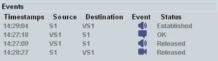

A new line is added to the top of the "Events" area whenever a new session is set up or a message is sent or received.
When a state changes, the corresponding line is updated.

To clear the area, switch the IMS server off and on again. To view details for a call or a message, select the line and check the lower part of the main view, see "Event Details".
You can query all lines in the "Events" area via a single command.
Remote command:This column indicates the time when the status was reached.
"Source": calling party / message sender
"Destination": called party / message recipient
"VSn": virtual subscriber number n
"Sn": subscriber number n
"Cn": conference server number n
- audio call
- video call
- ongoing call setup or call on hold
- sent or received message (3GPP, 3GPP2, RCS pager)
- sent or received RCS 1 to 1 chat message
- sent or received RCS group chat message
- sent or received RCS large message
- file transfer
Indicates the status of the session or message transfer.
A session is set up, for example, for VoLTE calls, RCS large message transfers, RCS chats and file transfers. Short message transfers and RCS pager mode message transfers are done without setting up a session.
"In Progress" | The session setup is in progress. |
"Ringing" | The DUT is ringing during the session setup. |
"Created" | An MO INVITE request or an MT call trigger was received by the IMS and the IMS started processing it. |
"Initial Media" | The codec negotiation is complete (during the session setup). |
"Established" | The session has been established. |
"Media Update" | The codec negotiation is complete (during a call update). |
"Hold" | The call is on hold. |
"Resumed" | The call has been resumed after putting it on hold. |
"File Transfer" | The file transfer is complete. |
"Text Transferred" | An RCS message has been received or sent (RCS large, RCS chat). |
"Released" | The session has been released. |
"Released for SRVCC" | The call has been released due to SRVCC handover. |
"Busy" | The called subscriber is busy. |
"Declined" | The call has been declined by the called subscriber. |
"Canceled" | The session has been canceled during the setup. |
"Rejected" | The session setup failed. |
"Terminated" | The session has been terminated abruptly. |
"OK" | A message has been received or sent without detecting problems (3GPP, 3GPP2, RCS pager). |
"Not OK" | A message has been received or sent and problems have been detected (3GPP, 3GPP2, RCS pager). |